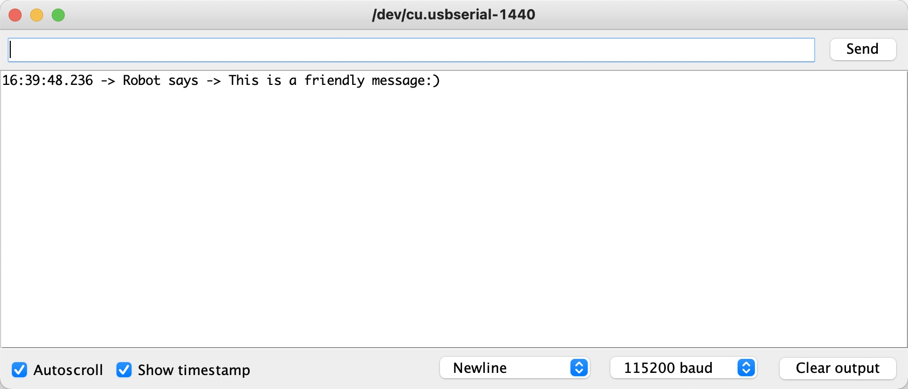
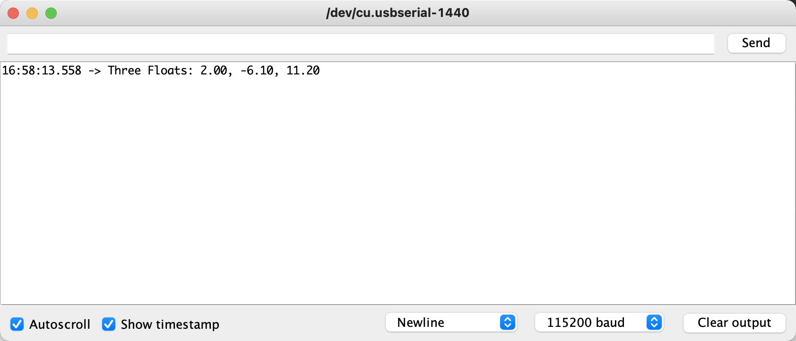
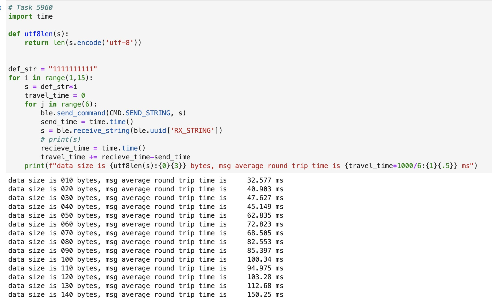
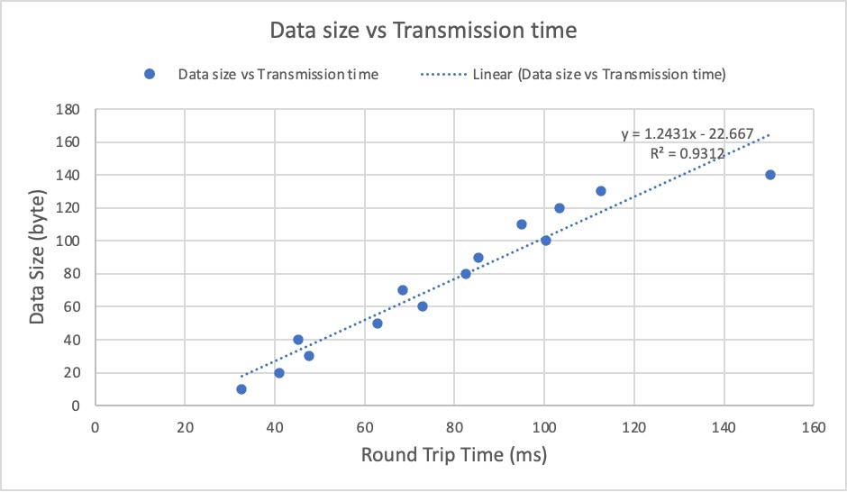

Lab 2 Report In this lab, we configured our local environment to establish a bluetooth connection between our laptop and the Artemis board. And through the tasks, I haved learned how to use the bluetooth operations to communicate between devices, what GGAT characteristics and variables does to notify other devices, and what part uuid plays in overall bluetooth communication. Task 1 ECHO This task used the python package "ble" to send command to the artemis board using bluetooth. Using the function send_command(CMD,data), where CMD is the type of function you want the artemis board to perform, and how to recieve the type of data it is used. At the board side, it's just a simple recieve command and print out the data. Results shown in Fig.1.  Fig.1 Task 1 results Python code:
ble.send_command(CMD.ECHO, "This is a friendly message")
C code:
/*
* Add a prefix and postfix to the string value extracted from the command string
*/
case ECHO:
char char_arr[MAX_MSG_SIZE];
// Extract the next value from the command string as a character array
success = robot_cmd.get_next_value(char_arr);
if (!success)
return;
/*
* Your code goes here.
*/
Serial.print("Robot says -> ");
Serial.print(char_arr);
Serial.println(":)");
break;
Task 2 Sned Three Floats This task is similar to task 1, but I have to initiate three float variables and print them out. Results shown in Fig.2.  Fig.2 Task 2 results Python code:
ble.send_command(CMD.SEND_THREE_FLOATS, "2.0|-6.1|11.2")
C code:
/*
* Extract three floats from the command string
*/
case SEND_THREE_FLOATS:
/*
* Your code goes here.
*/
float f_a,f_b,f_c;
// Extract the next value from the command string as an integer
success = robot_cmd.get_next_value(f_a);
if (!success)
return;
// Extract the next value from the command string as an integer
success = robot_cmd.get_next_value(f_b);
if (!success)
return;
success = robot_cmd.get_next_value(f_c);
if (!success)
return;
Serial.print("Three Floats: ");
Serial.print(f_a);
Serial.print(", ");
Serial.print(f_b);
Serial.print(", ");
Serial.println(f_c);
break;
Task 3 Float notification handler This task is to set up a notification on the float GGAT characteristics on the board. Once the float GGAT value changes, board will send back the value imedeately. Results shown in below video. Python code:
import time,struct
flt = 0.0
def note_hdl(uuid_f,flt):
print(struct.unpack('f', flt))
ble.start_notify(ble.uuid['RX_FLOAT'], note_hdl)
ble.stop_notify(ble.uuid['RX_FLOAT'])
Task 4 Difference between float recieving methods Recieveing float or string from transmitter is the same, using two different GATT characteristics, which would need two different UUIDs. Though the data type may be different, but it is all sent thought byte array. And here shows the difference between float and string. Float is 4 bytes, and strings every char is 1 byte, thus minumum of sending float as string is 3 bytes. So if the float is very large, such as 321.123, as float it would be 4 bytes, but as string it is 7 bytes. Sending float as string has a high probability that it will be larger. And sending float as string it will take up extra computing power to convert it back to float.
Task 5960 Bluetooth data rate 1. To test out the data rate, I implemented another bluetooth command "SEND_STRING", which I send a string through python, then after recieving the string, the board returns the exact same string back. Python would record the time span between sending the string and recieving the string. So the data rate would be: 0.5 * string size/time span. I would increase the string size from 10 bytes to 140 bytes, every size would have 6 trail runs to record the average time span. Results shown in Fig.3 and Fig.4  Fig.3 Task 5960 Results  Fig.4 Task 5960 Plot From Fig.4's trend line, you can see that the data rate is around 1.24 byte/ms, there's also a x-intercept, at around 22.384 ms, I believe that's the processing time needed for the laptop and the board to process the recieve and transimission of the data. Below is the code snippet. Python code:
# Task 5960
import time
def utf8len(s):
return len(s.encode('utf-8'))
def_str = "1111111111"
for i in range(1,15):
s = def_str*i
travel_time = 0
for j in range(6):
ble.send_command(CMD.SEND_STRING, s)
send_time = time.time()
s = ble.receive_string(ble.uuid['RX_STRING'])
# print(s)
recieve_time = time.time()
travel_time += recieve_time-send_time
print(f"data size is {utf8len(s):{0}{3}} bytes, msg average
round trip time is {travel_time*1000/6:{1}{.5}} ms")
C code:
case SEND_STRING:
char char_arr1[MAX_MSG_SIZE];
// Extract the next value from the command string as a character array
success = robot_cmd.get_next_value(char_arr1);
if (!success)
return;
/*
* Your code goes here.
*/
tx_estring_value.clear();
tx_estring_value.append(char_arr1);
tx_characteristic_string.writeValue(tx_estring_value.c_str());
Serial.print("Sent back: ");
Serial.println(tx_estring_value.c_str());
break;
2. That's a case we have considered when using my method to measure the data rate. Because reading the message from the board is through GGAT, once requested the data, it will send it back imedeately with top priority. So if the data rate is faster than the processing time of the board, the board wouldn't have read all the bytes from the transmitter and send the data in the buffer back. But thankfully it isn't the case, I have verified that the sent data matches the recieved data. Shown in Fig.5